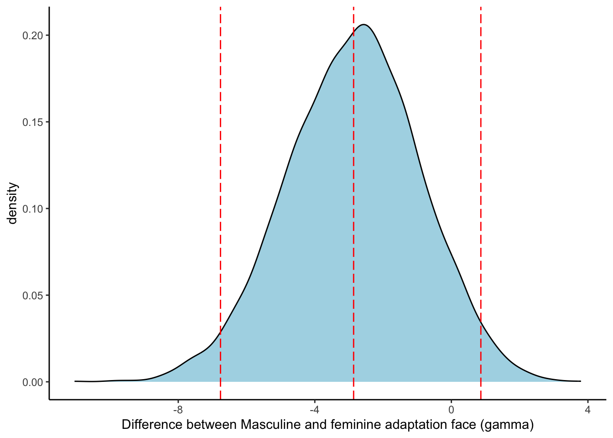

## load data & wrangled <-read.csv("data/paper_data.csv") %>%select(starts_with("f"), starts_with("m"), starts_with("Cog"), Age, starts_with("g")) %>%# select rele vant colöumsselect(!c(Feedback, Feedback...Parent.Topics, Feedback...Topics, Finished)) %>%slice(-(1:2)) %>%# remove first two columnsmutate(across(starts_with("GenE"), as.numeric)) %>%mutate(geness_m =rowMeans(across(starts_with("GenE")))) %>%mutate(geness_c = geness_m -mean(geness_m, na.rm =TRUE), # center gender essentialismid =1:nrow(.)) %>%pivot_longer(c(starts_with("f"), starts_with("m")), names_to ="face", values_to ="rating") %>%#make into long formatmutate(rating =as.numeric(rating),condition =substr(face, 1,1),ad_face =substr(face, 1,2),test_face =substr(face, 3,5)) %>%na.omit()
Background
People are generally attentive to gender in faces, and good at categorizing gender correctly (reference). That said, a number of studies have also showed that people can be affected by other stimuli when categorizing faces. An example of this is what has been termed a face adaptation effect (McLeod). Face adaptation is similar to other types of sensory adaptation = such as color adaptation where for example exposiure to blue makes white seem more yellow = but works for higher level properties of faces. This has been shown for gender: after watching a gendered face - for example a feminine face - the next face appears more masculine. To me, adaptation implies a specific neural mechanism and a change in perception, however, as other authors have pointed out, it is equally plausible that the change happens in terms of interpretation. For that reason, I will refer to the effect as a contrast effect, rather than an adaptation effect.
It has furthermore been shown that this effect can be elicited by non-face stimuli also. For example, exposure to feminine body types have made neutral faces seem more masculine (ref). This contrast effect has also been observed for race - a neutral face being perceived as more Black followed by exposure to a white face. In this area, the strength of the contrast effects has been linked to essentialist views on racial differences. Drawing on this study, we were curious if the same could be said for gender. In other words, would there be a stronger contrast effect for particiapnts who held gender essentialist views.
The data were collected from around 200 particpants who rated a set of 12 gender neutral faces on a scale from 0 (fully feminine) to 100 (fully masculine). The 12 gender neutral faces were preceded by one of 6 masculine faces or one of 6 feminine faces. The design was fully within-participants, so each participant saw every combination of neutral face and gendered face (7*12 = 84 trials). Originally, we had aggregated the scores for each participant, to calculate an average “masculine” score and an average “feminine” score. However, the scores were quite noisy, and we didn’t see clear effects. On the other hand, by aggregating the scores for each participant, we lost a lot of data. I was interested in using this exercise as an exercise to revisit that data, and a chance to deepen my understanding of multilevel models.
The outcome is therefore face rating, which varies from 0-100 (fully masculine). There are two predictors: gender condition, which face preceded the test face masculine or feminine; and gender essentialism, a rating scale participants filled out which measures their attitudes on gender.
Research question
Is there a contrast effect of facial gender? Are neutral faces which follow a masculine face rated as more feminine than faces which follow feminine faces
Do participants with gender essentialist beliefs display a stronger contrast effect? In other words is there an interaction effect between adaptation face and gender binary beliefs?
Statistical analyses
For each research question, I used a two-step appraoch: first model comparison, then testing within the model. For each research question, a null model and at least one other model were fit to the data.
Contrast face effect
The null and alternative models are shown in (1) and (2). The null model (1) is the simplest model and suggests that the outcomes as a function of a normal distribution with intercept \alpha and with standard deviation \sigma. The model also includes unique intercept for subjects and for each face trial.
# Currently, the code is commented out. To run the model, uncomment the code and rerun the chunk. I did this so I woulnd't have to run the model every time I wanted to check my output. #fit_null <- stan_lmer(rating ~ 1 + (1 |id) + (1 |test_face),# data = d,# prior_intercept = normal(50,20),#prior_aux = exponential(1),#chains = 4,#cores = 4,#file = "models/fit_null.rds")#saveRDS(fit_null, "models/fit_null.rds")fit_null <-readRDS("models/fit_null.rds")
The contrast face model (2) includes an additional fixed effect of adaptation face condition. The within-participants design of the study meant that condition was crossed with both subjects and faces. This model, then, also suggests that the the effect of condition is determined by \gamma, a population level variable, but also by subject-level and face-level variation. The model also includes overall subject-level and face-level \alpha parameters, allowing for subjects and faces to vary in how they are perceived. Furthermore, the model implies that the variablity of subjects and faces is correlated with the mean scores of the subjects and the targets. The main parameters of interest is the \gamma. The priors in the model are selected to be weakly informative.
To test the interaction between gender essentialism and contrast face effect, I fit two additional model to the data. The first is a “main effects” model (3), which is identical to (2), with the addition of the predicter essentialism. The effect of essentialism is composed of two parts, an overall effect and an effect for each face, reflecting the idea that the effect of essentialism can be stronger for some faces than for others.
Lastly, (4) models the interaction between condition and gender essentialism. Here, \gamma_{\text{Condition}} denotes the effect of adaptation face condition and indicates that separate intercepts are calculated for each experimental condition. This notation implies that the effect of condition is the overall effect of condition plus. Additionally, the term \beta_{\text{condition}} suggests that similarly, a unique slope coefficient is calculated for each condition as well. There is no “interaction term” in this model, but the interaction could be easily calculated by subtracting the differences between the slopes of essentialism in the fem and masc conditions.
This approach is applied to the hierarchical section of the model as well. Unique intercepts are calculated for subjects and faces and unique slopes are calculated for faces. Importantly, for each of these parameters, two values are calculated - one for each condition - and the values for each conditions are assumed to covary - in other words, vary as a function of a multivariate normal distribution.
My first research question was whether there was a contrast face effect. In other words, whether faces preceded by a masculine face are perceived as more feminine and whether faces preceded by feminine adaptation faces are perceived a more masculine. The results of the contrast effects are shown in Figure 1. Looking at the raw distributions of scores, it is hard to draw the conclusion that there is any difference whatsoever, though perhaps it is notable that a large number of scores are concentrated around 0 and 100.
Figure 1. Distribution of ratings of faces in the femininity and masculinity conditions
Indeed, the posterior distribution of the difference between the conditions is centered around a small value - 2 points on a 100-point scale (see Figure 2). The posterior distribution is quite wide, including both the null point, but also values of up to 8.
Code
draws <-as_tibble(fit_condition) # sample from the posterioradface_effect <- draws$conditionm # the effect of masculine compared to feminine faceggplot(data =data.frame(adface_effect), aes(x = adface_effect)) +geom_density(color ="black", fill ="lightblue") +scale_x_continuous("Difference between Masculine and feminine adaptation face (gamma)")+geom_vline(xintercept =c(mean(adface_effect),quantile(adface_effect, probs =c(0.025, 0.975))),colour ="red", linetype ="longdash")+theme_classic( )

Figure 2. Posterior distribution of the population difference between ratings in femininity and masculinity conditions
Essentialism
My second research question concerned whether there was an interaction between condition and gender essentialist beliefs. One way to put this is that the effect of gender essentialism should differ depending on a pronoun condition. In other words, the slope coefficient should the opposite sign in the two conditions. In fact, this turned out to be the case. This is illustrated in figure 3. This figure suggests that there is an interaction effect. For high essentialism particpants, there does seem to be an contrast effect. In contrast, low essentialism particiipants rather show evidence of a similarity effect, where exposure to one feminine face makes the second face seem more feminine.
Figure 3. The effect of essentialism of ratings of faces followed by masculine and feminine adaptation faces
Although there is no singular “interaction term” in the model, it can be calculated by directly comparing the slope in the masculine condition to the slope in the feminine condition. I did this, and the posterior density of the difference between the slopes suggests that there is indeed an interaction effect of some magnitude - the 95% HPDs are centered around 10 on the outcome scale and very far from overlapping with the null point (see figure 4.).
Figure 4. Posterior distribution of the difference in effect (slope) of essentialism gender ratings following feminine and masculine faces
Conclusion
Similar to contrast effects of race, the contrast effect of gender on faces seems to be determined by gender essentialism. I didn’t find any overall contrast effect of gender but this seemed to be because the effect was masked by an interaction between contrast effect and gender essentialism. Participants who held gender essentialist views displayed the effected contrast effect. However, people who held gender non-essential views displayed an unexpected similarity effect. That is, they thought a face was more feminine following a feminine face and more masculine following a masculine face.
Source Code
---title: "Face adaptation to gender depends on gender binary beliefs"author: "Elli van Berlekom"execute: results: "hide" fig.keep: "all"format: html: theme: simplex code-fold: true code-tools: true toc: true html-math-method: katex css: styles.css comments: hypothesis: TRUE---```{r setup, include=FALSE}rm(list =ls()) # clear memorygraphics.off() # clear all plotscat("\014") # clear console (same as Ctrl-L in console)set.seed(123) # Makes it reproducable also if random number generators are used``````{r load dependencies, include = FALSE}library(tidyverse)library(rstanarm)``````{r}## load data & wrangled <-read.csv("data/paper_data.csv") %>%select(starts_with("f"), starts_with("m"), starts_with("Cog"), Age, starts_with("g")) %>%# select rele vant colöumsselect(!c(Feedback, Feedback...Parent.Topics, Feedback...Topics, Finished)) %>%slice(-(1:2)) %>%# remove first two columnsmutate(across(starts_with("GenE"), as.numeric)) %>%mutate(geness_m =rowMeans(across(starts_with("GenE")))) %>%mutate(geness_c = geness_m -mean(geness_m, na.rm =TRUE), # center gender essentialismid =1:nrow(.)) %>%pivot_longer(c(starts_with("f"), starts_with("m")), names_to ="face", values_to ="rating") %>%#make into long formatmutate(rating =as.numeric(rating),condition =substr(face, 1,1),ad_face =substr(face, 1,2),test_face =substr(face, 3,5)) %>%na.omit()```# BackgroundPeople are generally attentive to gender in faces, and good at categorizing gender correctly (reference). That said, a number of studies have also showed that people can be affected by other stimuli when categorizing faces. An example of this is what has been termed a face adaptation effect (McLeod). Face adaptation is similar to other types of sensory adaptation = such as color adaptation where for example exposiure to blue makes white seem more yellow = but works for higher level properties of faces. This has been shown for gender: after watching a gendered face - for example a feminine face - the next face appears more masculine. To me, adaptation implies a specific neural mechanism and a change in perception, however, as other authors have pointed out, it is equally plausible that the change happens in terms of interpretation. For that reason, I will refer to the effect as a contrast effect, rather than an adaptation effect.It has furthermore been shown that this effect can be elicited by non-face stimuli also. For example, exposure to feminine body types have made neutral faces seem more masculine (ref). This contrast effect has also been observed for race - a neutral face being perceived as more Black followed by exposure to a white face. In this area, the strength of the contrast effects has been linked to essentialist views on racial differences. Drawing on this study, we were curious if the same could be said for gender. In other words, would there be a stronger contrast effect for particiapnts who held gender essentialist views.The data were collected from around 200 particpants who rated a set of 12 gender neutral faces on a scale from 0 (fully feminine) to 100 (fully masculine). The 12 gender neutral faces were preceded by one of 6 masculine faces or one of 6 feminine faces. The design was fully within-participants, so each participant saw every combination of neutral face and gendered face (7\*12 = 84 trials). Originally, we had aggregated the scores for each participant, to calculate an average "masculine" score and an average "feminine" score. However, the scores were quite noisy, and we didn't see clear effects. On the other hand, by aggregating the scores for each participant, we lost a lot of data. I was interested in using this exercise as an exercise to revisit that data, and a chance to deepen my understanding of multilevel models.The outcome is therefore face rating, which varies from 0-100 (fully masculine). There are two predictors: gender condition, which face preceded the test face masculine or feminine; and gender essentialism, a rating scale participants filled out which measures their attitudes on gender. # Research question1. Is there a contrast effect of facial gender? Are neutral faces which follow a masculine face rated as more feminine than faces which follow feminine faces2. Do participants with gender essentialist beliefs display a stronger contrast effect? In other words is there an interaction effect between adaptation face and gender binary beliefs? # Statistical analysesFor each research question, I used a two-step appraoch: first model comparison, then testing within the model. For each research question, a null model and at least one other model were fit to the data. ## Contrast face effectThe null and alternative models are shown in (1) and (2). The null model (1) is the simplest model and suggests that the outcomes as a function of a normal distribution with intercept $\alpha$ and with standard deviation $\sigma$. The model also includes unique intercept for subjects and for each face trial. $$\begin{aligned}\text{Rating}_i &\sim \mathrm{Normal}(\mu_i, \sigma_i) & (1)\\\mu &= \alpha + \alpha_{\text{Subjec[i]}}+\alpha_{\text{Face[i]}} \\\alpha &\sim \mathrm{Normal}(50, 20)\\\alpha_{\text{Subject}} &\sim \mathrm{Normal}(0, \sigma_{\text{Subject}}) \\\alpha_{\text{Face}} &\sim \mathrm{Normal}(0, \sigma_{\text{Face}}) \\\sigma,\sigma_{\text{Subject}}, \sigma_\text{Face}, &\sim \mathrm{Exponential}(1)\\\end{aligned}$$```{r null model}# Currently, the code is commented out. To run the model, uncomment the code and rerun the chunk. I did this so I woulnd't have to run the model every time I wanted to check my output. #fit_null <- stan_lmer(rating ~ 1 + (1 |id) + (1 |test_face),# data = d,# prior_intercept = normal(50,20),#prior_aux = exponential(1),#chains = 4,#cores = 4,#file = "models/fit_null.rds")#saveRDS(fit_null, "models/fit_null.rds")fit_null <-readRDS("models/fit_null.rds")```The contrast face model (2) includes an additional fixed effect of adaptation face condition. The within-participants design of the study meant that condition was crossed with both subjects and faces. This model, then, also suggests that the the effect of condition is determined by $\gamma$, a population level variable, but also by subject-level and face-level variation. The model also includes overall subject-level and face-level $\alpha$ parameters, allowing for subjects and faces to vary in how they are perceived. Furthermore, the model implies that the variablity of subjects and faces is correlated with the mean scores of the subjects and the targets. The main parameters of interest is the $\gamma$. The priors in the model are selected to be weakly informative.$$\begin{aligned}\text{Rating}_i &\sim \mathrm{Normal}(\mu_i, \sigma_i) & (2)\\\mu &= \alpha + \alpha_{\text{Subjec[i]}}+\alpha_{\text{Face[i]}} + (\gamma + \gamma_{\text{Face[i]}} + \gamma_{\text{Subject[i]}})\times\text{condition}_i \\\alpha &\sim \mathrm{Normal}(50, 20)\\\begin{bmatrix} \alpha_{subject} \\ \gamma_{subject} \end{bmatrix}&\sim \mathrm{MVNormal} \bigg( \begin{bmatrix}0\\ 0\end{bmatrix}, \Sigma_{subject}\bigg) \\\Sigma_{subject}& = \begin{bmatrix}\sigma_ {\alpha[s]} & 0\\ 0 &\sigma_{\gamma[s]} \end{bmatrix}\textbf{R} \begin{bmatrix}\sigma_ {\alpha[s] }& 0\\ 0 &\sigma_{\gamma[s]} \end{bmatrix}\\\begin{bmatrix} \alpha_{Face} \\ \gamma_{Face} \end{bmatrix} &\sim \mathrm{MVNormal} \bigg( \begin{bmatrix}0\\ 0\end{bmatrix}, \Sigma_{Face}\bigg) \\\Sigma_{Face}& =\begin{bmatrix}\sigma_ {\alpha[it]} & 0\\ 0 &\sigma_{\gamma[it]} \end{bmatrix}\textbf{R} \begin{bmatrix}\sigma_ {\alpha[it]} & 0\\ 0 &\sigma_{\gamma[it] }\end{bmatrix}\\\beta_{so} & \sim \mathrm{Normal(0, 10)}\\\sigma,\sigma_{\alpha[\text{s}]}, \sigma_{\alpha[\text{f}]}, \sigma_{\beta[\text{s}]}, \sigma_{\beta[\text{f}]} &\sim \mathrm{Exponential}(1)\\\textbf{R}& \sim \mathrm{LKJcorr}(1) \end{aligned}$$```{r condition model}#fit_condition <- stan_lmer(rating ~ 1 + condition + (1 + condition |id) + (1 +condition|test_face),# data = d,# prior_intercept = normal(50,20),#prior = normal(0,10),# prior_aux = exponential(1),#chains = 4,#cores = 4)#saveRDS(fit_condition, "models/fit_condition.rds")fit_condition <-readRDS("models/fit_condition.rds")```## Gender essentialismTo test the interaction between gender essentialism and contrast face effect, I fit two additional model to the data. The first is a "main effects" model (3), which is identical to (2), with the addition of the predicter essentialism. The effect of essentialism is composed of two parts, an overall effect and an effect for each face, reflecting the idea that the effect of essentialism can be stronger for some faces than for others. $$\begin{aligned}\text{Rating}_i &\sim \mathrm{Normal}(\mu_i, \sigma_i) & (3)\\\mu &= \alpha + \alpha_{\text{Subjec[i]}}+\alpha_{\text{Face[i]}} + (\gamma + \gamma_{\text{Face[i]}} + \gamma_{\text{Subject[i]}})\times\text{condition}_i + (\beta + \beta_{\text{face[i]}})\times \text{essentialism}_{i}\\\alpha &\sim \mathrm{Normal}(50, 20)\\\begin{bmatrix} \alpha_{subject} \\ \gamma_{subject} \end{bmatrix}&\sim \mathrm{MVNormal} \bigg( \begin{bmatrix}0\\ 0\end{bmatrix}, \Sigma_{subject}\bigg) \\\Sigma_{subject}& = \begin{bmatrix}\sigma_ {\alpha[s]} & 0\\ 0 &\sigma_{\gamma[s]} \end{bmatrix}\textbf{R} \begin{bmatrix}\sigma_ {\alpha[s] }& 0\\ 0 &\sigma_{\gamma[s]} \end{bmatrix}\\\begin{bmatrix} \alpha_{Face} \\ \gamma_{Face} \end{bmatrix} &\sim \mathrm{MVNormal} \bigg( \begin{bmatrix}0\\ 0\end{bmatrix}, \Sigma_{Face}\bigg) \\\Sigma_{Face}& =\begin{bmatrix}\sigma_ {\alpha[it]} & 0\\ 0 &\sigma_{\gamma[it]} \end{bmatrix}\textbf{R} \begin{bmatrix}\sigma_ {\alpha[it]} & 0\\ 0 &\sigma_{\gamma[it] }\end{bmatrix}\\\begin{bmatrix} \alpha_{Face} \\ \beta_{Face} \end{bmatrix} &\sim \mathrm{MVNormal} \bigg( \begin{bmatrix}0\\ 0\end{bmatrix}, \Sigma_{Face}\bigg) \\\Sigma_{Face}& =\begin{bmatrix}\sigma_ {\alpha[it]} & 0\\ 0 &\sigma_{\beta[it]} \end{bmatrix}\textbf{R} \begin{bmatrix}\sigma_ {\alpha[it]} & 0\\ 0 &\sigma_{\beta[it] }\end{bmatrix}\\\beta_{so} & \sim \mathrm{Normal(0, 10)}\\\sigma,\sigma_{\alpha[\text{s}[]}, \sigma_{\alpha[\text{it}[]}, \sigma_{\beta[\text{s}[]}, \sigma_{\beta[\text{it}[]} &\sim \mathrm{Exponential}(1)\\\textbf{R}& \sim \mathrm{LKJcorr}(1) \end{aligned}$$```{r effect of condition and essentialism}#fit_essentialism <- stan_lmer(rating ~ 1 + condition + geness_c + (1+ condition|id) + (1+condition + geness_c|test_face),# data = d,# prior_intercept = normal(50,20),# prior = normal(0,5),#prior_aux = exponential(1),#chains = 4,#cores = 4,#iter= 6000,#warmup = 4000)#saveRDS(fit_essentialism, "models/fit_essentialism.rds")fit_essentialism <-readRDS("models/fit_essentialism.rds")```Lastly, (4) models the interaction between condition and gender essentialism. Here, $\gamma_{\text{Condition}}$ denotes the effect of adaptation face condition and indicates that separate intercepts are calculated for each experimental condition. This notation implies that the effect of condition is the overall effect of condition plus. Additionally, the term $\beta_{\text{condition}}$ suggests that similarly, a unique slope coefficient is calculated for each condition as well. There is no "interaction term" in this model, but the interaction could be easily calculated by subtracting the differences between the slopes of essentialism in the fem and masc conditions. This approach is applied to the hierarchical section of the model as well. Unique intercepts are calculated for subjects and faces and unique slopes are calculated for faces. Importantly, for each of these parameters, two values are calculated - one for each condition - and the values for each conditions are assumed to covary - in other words, vary as a function of a multivariate normal distribution. $$\begin{aligned}\text{Rating}_i &\sim \mathrm{Normal}(\mu_i, \sigma_i)\\\mu &= \alpha_{\text{Subjec[i]}, \text{Condition[i]}}+\alpha_{\text{Face[i]}, \text{Condition[i]}} + \gamma_{\text{Condition[i]}} + \beta_{\text{Condition[i]}} \times \text{essentialism}_{i} + \beta_{\text{face[i],Condition[i]}}\times \text{essentialism}_{i}\\\alpha &\sim \mathrm{Normal}(50, 20)\\\begin{bmatrix} \alpha_{s, \textrm{Fem}} \\ \alpha_{s, \textrm{Masc}} \end{bmatrix}&\sim \mathrm{MVNormal} \bigg( \begin{bmatrix}0\\ 0\end{bmatrix}, \Sigma_{subject}\bigg) \\\Sigma_{subject}& = \begin{bmatrix}\sigma_ {\alpha[Fem]} & 0\\ 0 &\sigma_{\alpha[Masc]} \end{bmatrix}\textbf{R} \begin{bmatrix}\sigma_ {\alpha[Fem] }& 0\\ 0 &\sigma_{\alpha[Masc]} \end{bmatrix}\\\begin{bmatrix} \alpha_{f, \text{Fem}} \\ \alpha_{f,\text{Masc}} \end{bmatrix}&\sim \mathrm{MVNormal} \bigg( \begin{bmatrix}0\\ 0\end{bmatrix}, \Sigma_{Face}\bigg) \\\Sigma_{Face}& =\begin{bmatrix}\sigma_ {\alpha[Fem]} & 0\\ 0 &\sigma_{\alpha[Masc]} \end{bmatrix}\textbf{R} \begin{bmatrix}\sigma_ {\alpha[Fem]} & 0\\ 0 &\sigma_{\alpha[Masc]} \end{bmatrix}\\\begin{bmatrix} \alpha_{Face} \\ \beta_{Face} \end{bmatrix} &\sim \mathrm{MVNormal} \bigg( \begin{bmatrix}0\\ 0\end{bmatrix}, \Sigma_{Face}\bigg) \\\Sigma_{Face}& =\begin{bmatrix}\sigma_ {\alpha[it]} & 0\\ 0 &\sigma_{\beta[it]} \end{bmatrix}\textbf{R} \begin{bmatrix}\sigma_ {\alpha[it]} & 0\\ 0 &\sigma_{\beta[it] }\end{bmatrix}\\\beta_{so} & \sim \mathrm{Normal(0, 5)}\\\sigma,\sigma_{\alpha[\text{s}[]}, \sigma_{\alpha[\text{it}[]}, \sigma_{\beta[\text{s}[]}, \sigma_{\beta[\text{it}[]} &\sim \mathrm{Exponential}(1)\\\textbf{R}& \sim \mathrm{LKJcorr}(1) \end{aligned}$$```{r effect of condition and essentialism2}#fit_essentialism_int <- stan_lmer(rating ~ 0 + condition +condition:geness_c + (0+ condition|id) + (0+condition + geness_c|test_face),# data = d,#prior_intercept = normal(50,20),# prior = normal(0,5),#prior_aux = exponential(1),# chains = 4,# cores = 4, #warmup = 2000,#iter = 6000)#saveRDS(fit_essentialism_int, "models/fit_essentialism_int.rds")fit_essentialism_int <-readRDS("models/fit_essentialism_int.rds")``````{r}#tmp <- d %>% #lice(1:1000)#fit_essentialism_test <- stan_lmer(rating ~ 0 + condition + condition:geness_c + (condition|id) + (condition + geness_c|test_face),# data = tmp,# prior_intercept = normal(50,20),# prior = normal(0,5),#prior_aux = exponential(1),# chains = 4,# cores = 4, # warmup = 2000,# iter = 4000)```# Results## Contrast EffectsMy first research question was whether there was a contrast face effect. In other words, whether faces preceded by a masculine face are perceived as more feminine and whether faces preceded by feminine adaptation faces are perceived a more masculine. The results of the contrast effects are shown in Figure 1. Looking at the raw distributions of scores, it is hard to draw the conclusion that there is any difference whatsoever, though perhaps it is notable that a large number of scores are concentrated around 0 and 100.```{r descriptives, fig.cap= "Figure 1. Distribution of ratings of faces in the femininity and masculinity conditions"}ggplot(data = d, aes(x = condition, y =rating, fill = condition)) +#geom_violin() +geom_boxplot(width=0.1) +geom_dotplot(binaxis='y', stackdir='center', dotsize=0.05, alpha =0.2, binwidth =1.6)+theme_classic()+scale_x_discrete(labels =c("Feminine", "Masculine"))+guides(fill ="none")+xlab("Condition") +ylab("Score")```Indeed, the posterior distribution of the difference between the conditions is centered around a small value - 2 points on a 100-point scale (see Figure 2). The posterior distribution is quite wide, including both the null point, but also values of up to 8. ```{r gamma-posterior, fig.cap= "Figure 2. Posterior distribution of the population difference between ratings in femininity and masculinity conditions"}draws <-as_tibble(fit_condition) # sample from the posterioradface_effect <- draws$conditionm # the effect of masculine compared to feminine faceggplot(data =data.frame(adface_effect), aes(x = adface_effect)) +geom_density(color ="black", fill ="lightblue") +scale_x_continuous("Difference between Masculine and feminine adaptation face (gamma)")+geom_vline(xintercept =c(mean(adface_effect),quantile(adface_effect, probs =c(0.025, 0.975))),colour ="red", linetype ="longdash")+theme_classic( ) ```## EssentialismMy second research question concerned whether there was an interaction between condition and gender essentialist beliefs. One way to put this is that the effect of gender essentialism should differ depending on a pronoun condition. In other words, the slope coefficient should the opposite sign in the two conditions. In fact, this turned out to be the case. This is illustrated in figure 3. This figure suggests that there is an interaction effect. For high essentialism particpants, there does seem to be an contrast effect. In contrast, low essentialism particiipants rather show evidence of a similarity effect, where exposure to one feminine face makes the second face seem more feminine.```{r fig.cap= "Figure 3. The effect of essentialism of ratings of faces followed by masculine and feminine adaptation faces"}draw <-as_tibble(fit_essentialism_int) %>%rename(mean_f = conditionf, mean_m = conditionm, slope_f =`conditionf:geness_c`, slope_m =`conditionm:geness_c` ) %>%mutate(mean_f = mean_f , mean_m = mean_m ) %>%select(mean_f, mean_m, slope_f, slope_m) d %>%ggplot(aes(y = rating, x = geness_c, color = condition))+#geom_point(alpha = 0.08)+#geom_jitter(alpha = 0.1, width = 0.8)+geom_abline(aes(intercept = mean_f, slope = slope_f),data =slice_sample(draw, n =100),alpha =0.5,color ="pink" ) +geom_abline(intercept =median(draw$mean_f), slope =median(draw$slope_f), color ="red" ) +geom_abline(aes(intercept = mean_m, slope = slope_m),data =slice_sample(draw, n =100),alpha =0.5,color ="lightblue" ) +geom_abline(intercept =median(draw$mean_m), slope =median(draw$slope_m), color ="blue" ) +xlim(-2.2, 2.2)+ylim(15, 70)+xlab("Gender Essentialism (centered)")+ylab("Score")+theme_classic() ```Although there is no singular "interaction term" in the model, it can be calculated by directly comparing the slope in the masculine condition to the slope in the feminine condition. I did this, and the posterior density of the difference between the slopes suggests that there is indeed an interaction effect of some magnitude - the 95% HPDs are centered around 10 on the outcome scale and very far from overlapping with the null point (see figure 4.).```{r fig.cap= "Figure 4. Posterior distribution of the difference in effect (slope) of essentialism gender ratings following feminine and masculine faces"}interaction = draw$slope_f - draw$slope_m ggplot(data =data.frame(interaction), aes(x = interaction)) +geom_density(color ="black", fill ="lightblue") +scale_x_continuous("Difference of slopes (i.e. interaction effect)")+geom_vline(xintercept =c(median(interaction),quantile(interaction, probs =c(0.025, 0.975))),colour ="red", linetype ="longdash")+theme_classic( ) ```# ConclusionSimilar to contrast effects of race, the contrast effect of gender on faces seems to be determined by gender essentialism. I didn't find any overall contrast effect of gender but this seemed to be because the effect was masked by an interaction between contrast effect and gender essentialism. Participants who held gender essentialist views displayed the effected contrast effect. However, people who held gender non-essential views displayed an unexpected similarity effect. That is, they thought a face was more feminine following a feminine face and more masculine following a masculine face.